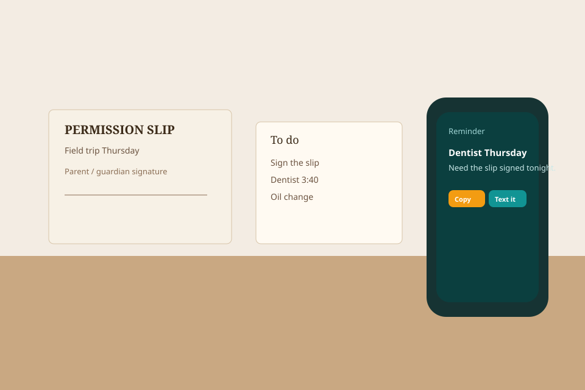

1
Name the desk
Your name, desk name, city, owner or helper. House, resale, insurance, or something else. If something else, name the work in your words. Talk walks the form. Type if the mic is off.
Give it a name and a code. Add a rule if you need one. That pair opens the queue on any phone. Email is not the login. After that, drop anything this desk should run.

Do this in order
Your name, desk name, city, owner or helper. House, resale, insurance, or something else. If something else, name the work in your words. Talk walks the form. Type if the mic is off.
Desk name + that person’s code. Do not share the owner code.
Same queue. Your words. A school form, a photo, a missed call, a neighbor text, a custom job.
Drop — type it or talk it. Lands as a card.
Talk on the desk — say the work. The draft stays on the card until you send it.
Create — another kind of work, a person, or a rule. Same desk.
A pipe — optional. Skip it if you just want the list.
The desk wrote the reminder, estimate, or text. Copy it, text it, email it, or hand it to someone. Stop cancels it. Money waits only if you wrote that rule. New drops pick up the current rules.
This week might be
Photos last after storage is on. Until then they can vanish on restart.